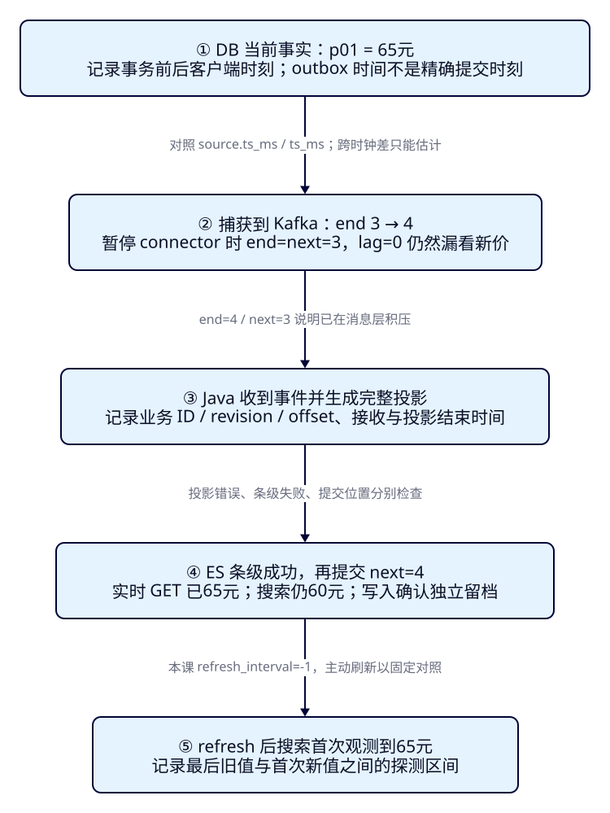
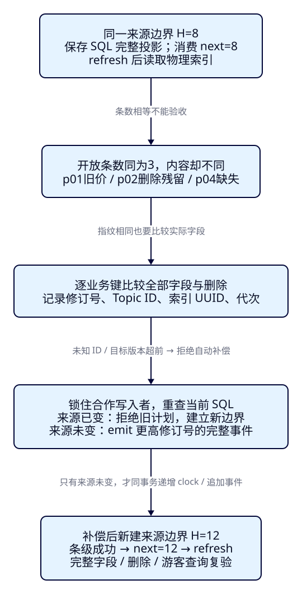

显示了旧价格，
怎样知道延迟在哪、数据是否丢了？
商家把西湖游船从60元改成65元，游客刷新后却仍看到60元。消息监控显示积压为0，运营不知道应该等待、重启消费者，还是重新导入数据。F41已经让持续更新的索引能够追平切换；这一课把“更新到哪里了”拆成可观察的阶段，再找出“位置追平但内容仍错”的资料，按当前业务事实补偿并重新验证搜索结果。
学完能用输出证明什么
- 用同一p01修订号关联DB、事件、Java、ES条级写入及搜索，解释lag为0与GET已更新时为什么仍可能显示旧价。
- 在相同来源边界比较完整业务键、字段及删除标记，找出条数相同却存在的缺文档、旧字段与删除残留。
- 从当前SQL生成新修订号的补偿事件，拒绝已过时的计划，再核对消费位置、原始文档和真实观察窗。
本课目录
图解跳转：01 · 延迟的五层证据 · 02 · 同一边界对账与补偿
1. 先确定“哪份事实”，再问“慢在哪里”
Elasticsearch维护适合检索的派生文档，PostgreSQL维护业务事实，来源SQL把城市、景点与标签组装成规范快照，Java将完整事件转换为ES投影并写入。CDC把提交后的变化逐段送往搜索系统；这个链路中，消息到达、投影生成、写入确认和搜索可见是不同事件。仅凭浏览器一张60元卡片，无法判断哪个环节没有完成。
我们沿业务键p01观察一次改价：先确认DB当前65元，再确认对应修订号2的完整事件是否到达Kafka，然后看Java是否处理、ES是否逐项成功，最后用真正的搜索请求核对。HTTP 200和日志“收到消息”都缺少后续阶段；Kafka提交位置表示恢复起点，也不是对投影内容做过独立审核的证书。
观察窗复用F07，默认输入“西湖”、城市HZ、预算200元、中心30.25/120.15与半径3km，结果按attraction_id升序。真实调用仍是浏览器→本机Java→ES，Pages只承载教程。教程不增加Controller或前端开发；raw文档、修订号、标签和删除标记通过REST观察，不要求卡片展示所有同步字段。

2. 时间戳、积压和可见性各能说明什么？
每条来源事件记录业务ID与sync_revision；Kafka再增加topic、partition与offset。前者标识实体事实的先后，后者定位该分区中的记录。消费者提交的next是下次恢复要读的位置；本课同分区的end-next反映尚未提交的日志跨度，包含fence等控制记录，不能当作积压景点数量，更不能拿不同分区的offset相减。
| 本课证据 | 怎样读取 | 解释边界 |
|---|---|---|
| DB事务前后时刻 | 客户端发SQL前与COMMIT返回后各采一次 | 提交发生在区间内；outbox的source_recorded_at在事务内采集，不是精确提交时刻 |
| source.ts_ms / ts_ms | 保留Debezium来源时间与连接器处理时间 | 属于不同进程时钟；时钟偏差、采样和快照语义影响差值 |
| Kafka timestamp/type | 记录消息时间戳和CreateTime等类型 | CreateTime不等于broker落盘时刻，也不等于Java收到时刻 |
| received / projected / item | Java在收到、完成转换、Bulk逐项返回后记observed_at | 包含调度与记录开销；item时间晚于ES实际接受时刻，不是服务端处理耗时 |
| 最后旧搜索 / 首次新搜索 | 保留每次请求起止、完整响应及条件 | 只能给可见性探测区间；本课主动refresh，不测自然刷新延迟 |
本轮p01逐阶段时间保留了提交区间、事件时间、Java接收/投影/条级返回、旧值与新值探针，便于沿同一修订号核对。相邻时间相减前，先核对它们来自哪个时钟、代表什么事件。本机也有Docker VM与宿主进程的区别；负差值先查时钟与定义。这里保留阶段时间和原始响应，用受控暂停证明定位能力，不把包含javac启动、人工等待和浏览器截图的耗时当成链路性能。Debezium 3.3事件字段说明可用于核对时间来源。
3. 固定样本、来源协议与本机启动
初始p01西湖游船6000分/HZ、p02西湖步道0分/HZ、p03西湖园林3000分/SZ，币种CNY、状态open、修订号1；p01有夜游标签，p02有亲水。后续新增p04西湖夜游4500分/HZ。价格均为整数分；城市、坐标、标签数组与删除投影沿用F41契约。原始索引保存删除标记，read alias只搜索sync_deleted=false。
所有合作写入者先取事务锁42042，再在同一事务改业务、递增持久clock并追加完整outbox事件；物理删除后clock继续存在。控制记录fence也取得同一锁，保存该时刻完整SQL投影。这个协议针对本课参与者，不会自动约束任意现存业务系统；任一旁路改表不emit都可能绕过同步。
独立Compose项目es-framework-f42；PG15442、Kafka29342、Connect18342、ES20642、观察窗18092，均绑定回环地址。版本锁定ES9.4.0/Lucene10.4.0、PG17.5、Kafka broker4.0.1、Debezium3.3.1.Final（Connect4.1.0）；应用Boot4.0.8/JDK25.0.4.1+1、官方Java与Rest5 Client9.4.8、Kafka客户端4.0.1。ES bundled JVM单独实读。一个主分片、0副本、strict mapping、价格long禁止coerce、refresh_interval=-1；单topic单分区、单副本、delete保留7天。
cd projects/travel-search
python3 labs/f42/lab.py init --out /tmp/f42-init
python3 labs/f42/lab.py start --out /tmp/f42-start
cd backend
./mvnw -B -ntp clean package dependency:build-classpath -Dmdep.outputFile=target/f42-classpath.txt
cd ..
backend/mvnw -B -ntp -f labs/f42/pom.xml dependency:build-classpath -Dmdep.outputFile=target/projection-classpath.txt
python3 labs/f42/lab.py run --out /tmp/f42-round1等start成功再执行run。init首次生成.local随机秘密（目录0700/文件0600），已有秘密或卷时拒绝覆盖；原卷重启只用start。Connect通过FileConfigProvider读取密码；本机ES无认证，Kafka/Connect明文，部署安全回看F35。每个out必须是新目录，防止覆盖已有证据。run负责准备、三案例和观察窗启停；读者无需安装Playwright。作者额外用浏览器观察钩子验收，和REST/Java原始记录分别保留。
完整SQL、mapping、连接器与alias配置
-- psql binds cdc_password through stdin; no credentials in this file.
CREATE SCHEMA f42;
CREATE TABLE f42.city (city_code text PRIMARY KEY, city_name text NOT NULL);
CREATE TABLE f42.attraction (
attraction_id text PRIMARY KEY CHECK (attraction_id ~ '^p[0-9]{2}$'),
name text NOT NULL, city_code text NOT NULL REFERENCES f42.city,
ticket_price_fen bigint NOT NULL CHECK (ticket_price_fen >= 0),
status text NOT NULL CHECK (status IN ('open','closed')),
latitude double precision NOT NULL, longitude double precision NOT NULL
);
CREATE TABLE f42.attraction_tag (
tag_id text PRIMARY KEY, attraction_id text NOT NULL REFERENCES f42.attraction ON DELETE CASCADE,
tag text NOT NULL, UNIQUE(attraction_id,tag)
);
-- Preserve clocks for closed/deleted roots, including during full export.
CREATE TABLE f42.projection_clock (attraction_id text PRIMARY KEY, revision bigint NOT NULL CHECK (revision > 0));
CREATE TABLE f42.projection_event (
source_recorded_at timestamptz NOT NULL DEFAULT clock_timestamp(),
event_id bigint GENERATED ALWAYS AS IDENTITY PRIMARY KEY,
kind text NOT NULL CHECK (kind IN ('document','fence')),
attraction_id text, revision bigint, document jsonb, fence_key text UNIQUE,
CHECK ((kind='document' AND attraction_id IS NOT NULL AND revision > 0 AND document IS NOT NULL AND fence_key IS NULL)
OR (kind='fence' AND attraction_id IS NULL AND revision IS NULL AND document IS NULL AND fence_key IS NOT NULL))
);
CREATE FUNCTION f42.project(p_id text) RETURNS jsonb LANGUAGE sql STABLE AS $$
SELECT jsonb_build_object(
'attraction_id',a.attraction_id,'name',a.name,'city_code',a.city_code,'city_name',c.city_name,
'ticket_price_fen',a.ticket_price_fen,'currency','CNY','status',a.status,
'location',jsonb_build_object('lat',a.latitude,'lon',a.longitude),
'tags',COALESCE((SELECT jsonb_agg(t.tag ORDER BY t.tag COLLATE "C")
FROM f42.attraction_tag t WHERE t.attraction_id=a.attraction_id),'[]'::jsonb))
FROM f42.attraction a JOIN f42.city c USING(city_code)
WHERE a.attraction_id=p_id AND a.status='open'
$$;
CREATE FUNCTION f42.envelope(p_id text) RETURNS jsonb LANGUAGE sql STABLE AS $$
SELECT COALESCE(f42.project(p_id),jsonb_build_object('attraction_id',p_id))
|| jsonb_build_object('sync_revision',revision,'sync_deleted',f42.project(p_id) IS NULL)
FROM f42.projection_clock WHERE attraction_id=p_id
$$;
-- Every writer takes lock 42042 BEFORE changing business rows. No trigger
-- enforces this for arbitrary writers. Emit ALL affected roots in the same tx.
CREATE FUNCTION f42.emit(p_id text) RETURNS bigint LANGUAGE plpgsql AS $$
DECLARE v bigint;
BEGIN
INSERT INTO f42.projection_clock VALUES(p_id,1)
ON CONFLICT(attraction_id) DO UPDATE SET revision=f42.projection_clock.revision+1
RETURNING revision INTO v;
INSERT INTO f42.projection_event(kind,attraction_id,revision,document)
VALUES('document',p_id,v,f42.envelope(p_id));
RETURN v;
END $$;
INSERT INTO f42.city VALUES('HZ','杭州'),('SZ','苏州');
INSERT INTO f42.attraction VALUES
('p01','西湖 游船','HZ',6000,'open',30.250,120.150),
('p02','西湖 步道','HZ',0,'open',30.251,120.151),
('p03','西湖 园林','SZ',3000,'open',31.320,120.620);
INSERT INTO f42.attraction_tag VALUES('t01','p01','夜游'),('t02','p02','亲水');
SELECT f42.emit('p01'),f42.emit('p02'),f42.emit('p03');
CREATE ROLE f42_cdc LOGIN REPLICATION PASSWORD :'cdc_password';
GRANT CONNECT ON DATABASE travel_f42 TO f42_cdc;
GRANT USAGE ON SCHEMA f42 TO f42_cdc;
GRANT SELECT ON f42.projection_event TO f42_cdc;
CREATE PUBLICATION f42_publication FOR TABLE f42.projection_event;{
"settings": {
"number_of_shards": 1,
"number_of_replicas": 0,
"refresh_interval": "-1"
},
"mappings": {
"dynamic": "strict",
"properties": {
"attraction_id": {
"type": "keyword"
},
"name": {
"type": "text",
"analyzer": "whitespace"
},
"city_code": {
"type": "keyword"
},
"city_name": {
"type": "keyword"
},
"ticket_price_fen": {
"type": "long",
"coerce": false
},
"currency": {
"type": "keyword"
},
"status": {
"type": "keyword"
},
"location": {
"type": "geo_point"
},
"tags": {
"type": "keyword"
},
"sync_revision": {
"type": "long"
},
"sync_deleted": {
"type": "boolean"
},
"sync_hash": {
"type": "keyword"
},
"projection_schema": {
"type": "integer"
}
}
}
}{
"actions": [
{
"add": {
"index": "tut-f42-attractions-v001",
"alias": "tut-f42-v1-ingest",
"is_write_index": true
}
},
{
"add": {
"index": "tut-f42-attractions-v001",
"alias": "tut-f42-attractions-read",
"filter": {
"term": {
"sync_deleted": false
}
}
}
}
]
}{
"name": "f42-pg",
"config": {
"connector.class": "io.debezium.connector.postgresql.PostgresConnector",
"tasks.max": "1",
"database.hostname": "postgres",
"database.port": "5432",
"database.user": "f42_cdc",
"database.password": "${file:/run/secrets/cdc-properties:password}",
"database.dbname": "travel_f42",
"topic.prefix": "travel_f42",
"plugin.name": "pgoutput",
"slot.name": "f42_slot",
"slot.drop.on.stop": "false",
"publication.name": "f42_publication",
"publication.autocreate.mode": "disabled",
"table.include.list": "f42.projection_event",
"snapshot.mode": "initial",
"tombstones.on.delete": "true",
"key.converter": "org.apache.kafka.connect.json.JsonConverter",
"key.converter.schemas.enable": "false",
"value.converter": "org.apache.kafka.connect.json.JsonConverter",
"value.converter.schemas.enable": "false",
"poll.interval.ms": "200",
"status.update.interval.ms": "1000"
}
}4. c01：同一张60元卡片，三种原因
第一步暂停连接器并确认connector/task都为PAUSED，再在DB把p01改成6500分。Kafka的end仍3，消费者next也3，lag=0；实时GET与搜索都6000分。变化尚未进入Kafka，可能停在来源读取、连接器内部队列或发布阶段。PAUSED不证明WAL尚未读取；本轮Debezium处理时间与Kafka CreateTime也不同，不能据end不动继续细分这一段。重启Java或refresh都无法创造尚未收到的新投影。先核对DB、连接器状态和来源位置，而不是把0积压当成健康结论。
BEGIN;
SELECT pg_advisory_xact_lock(42042);
UPDATE f42.attraction SET ticket_price_fen=6500 WHERE attraction_id='p01';
SELECT f42.emit('p01');
COMMIT;# 与自动run二选一；以下从已start且尚未prepare的空课次状态开始
python3 labs/f42/lab.py prepare --out /tmp/f42-prepare
python3 labs/f42/lab.py pause --out /tmp/f42-pause
python3 labs/f42/lab.py step price --out /tmp/f42-price
python3 labs/f42/lab.py inspect --out /tmp/f42-capture-paused
python3 labs/f42/lab.py resume --out /tmp/f42-resume
python3 labs/f42/lab.py inspect --out /tmp/f42-message-arrived第二步恢复连接器，等待p01/revision2事件到达offset3。此时end=4而next=3，但Java尚未运行消费，GET与搜索仍6000分。检查对应业务键、载荷、位置之后，再让消费者处理到high=4；不能用“topic里有新消息”证明Java已把正确字段交给ES。
python3 labs/f42/lab.py drain 4 --out /tmp/f42-apply-price
curl -sS http://127.0.0.1:20642/tut-f42-attractions-v001/_doc/p01
curl -sS -H 'Content-Type: application/json' -X POST 'http://127.0.0.1:20642/tut-f42-attractions-read/_search?allow_partial_search_results=false' -d '{"query":{"ids":{"values":["p01"]}}}'
curl -sS -X POST http://127.0.0.1:20642/tut-f42-attractions-v001/_refresh第三步Java条级写入成功并提交next=4。GET已6500分，搜索仍6000分；这次延迟留在搜索视图。索引显式关闭自动refresh，排除了“动作够快”的竞态。执行_refresh并重复同一搜索后变为6500分；原来的写入/offset已成功，不应靠重放整条链路解决。GET默认实时、搜索读刷新后的视图，分别见GET语义与Refresh API。
| 稳定点 | end / next | GET / 搜索金额（分） |
|---|---|---|
| 捕获暂停，DB已65元 | 3 / 3 | 6000 / 6000 |
| 消息已到，消费未运行 | 4 / 3 | 6000 / 6000 |
| 写入成功，尚未refresh | 4 / 4 | 6500 / 6000 |
| 主动refresh后 | 4 / 4 | 6500 / 6500 |
5. Java在哪里记录，什么时候提交位置？
每条JSON日志含宿主Instant时间observed_at，data中保存kind及关联信息。received记录offset、业务键、修订号、Kafka时间与Debezium两层时间；projected标记完整投影构造结束。字段校验失败会中断，不提交这个批次；item在Bulk返回后逐项记录ID、状态及结果。时间戳不会加入业务指纹，否则同一事实每次重放会变成不同载荷。
static Document project(String raw,String version) throws Exception {
ObjectNode doc=(ObjectNode)JSON.readTree(raw);
String id=doc.path("attraction_id").asString("");
long revision=doc.path("sync_revision").asLong(-1);
check(id.matches("p[0-9]{2}") && revision>0 && doc.path("sync_deleted").isBoolean(),"Invalid canonical projection");
check(!doc.has("sync_hash") && !doc.has("projection_schema") && !doc.has("price_band"),"Require canonical source fields");
int schema=1;
doc.put("projection_schema",schema);
// Same SQL JSONB text for the full snapshot and immutable outbox.
// Projection schema is part of the fingerprint; never share a guard
// state between v1 and v2, or relabel an old payload with a new revision.
String hash=HexFormat.of().formatHex(MessageDigest.getInstance("SHA-256")
.digest((schema+"\n"+raw).getBytes(StandardCharsets.UTF_8)));
doc.put("sync_hash",hash);
return new Document(id,revision,JsonData.fromJson(JSON.writeValueAsString(doc)));
}if (ctx._source.containsKey('sync_revision')) {
if (params.revision < ctx._source.sync_revision) {
ctx.op = 'noop';
return;
}
if (params.revision == ctx._source.sync_revision) {
if (ctx._source.sync_hash != params.document.sync_hash) {
throw new IllegalArgumentException('same revision with different payload');
}
ctx.op = 'noop';
return;
}
}
ctx._source.clear();
ctx._source.putAll(params.document); static void apply(ElasticsearchClient es,String version,List<Document> documents) throws Exception {
if(documents.isEmpty())return;
var bulk=new BulkRequest.Builder().requireAlias(true);
for(var doc:documents) bulk.operations(o->o.update(u->u.index(writer(version)).id(doc.id()).retryOnConflict(3)
.action(a->a.script(s->s.lang("painless").source(v->v.scriptString(SCRIPT))
.params("revision",JsonData.of(doc.revision())).params("document",doc.body()))
.scriptedUpsert(true).upsert(JsonData.fromJson("{}")))));
var response=es.bulk(bulk.build());check(response.items().size()==documents.size(),"Bulk item count mismatch");
var failures=new ArrayList<String>();
for(int i=0;i<documents.size();i++) {
var doc=documents.get(i);var item=response.items().get(i);
check(doc.id().equals(item.id()),"Bulk ID mismatch");
log(Map.of("kind","item","target",version,"index",item.index(),"id",doc.id(),"revision",doc.revision(),
"status",item.status(),"result",item.result()==null?"":item.result(),"error",item.error()==null?"":item.error().toString()));
if(item.error()!=null || item.status()>=300) failures.add(doc.id()+":"+item.status());
}
// No DLQ waiver in a rebuild gate. Recovery replays uncommitted work
// through the same guard; F40's transient retry policy can be added.
check(failures.isEmpty(),"Unresolved target items; no checkpoint commit: "+failures);
}只在apply全部成功后commitSync最后一条offset+1。成功返回中仍要检查items，HTTP 200不等于全部写入成功；守卫返回noop是已知旧事实或重复事实，不是漏处理。F40的失败重试/DLQ边界仍适用，本课不引入失败项豁免。官方Bulk接口和Kafka 4.0.1消费位置说明可交叉核对。
static void drain(ElasticsearchClient es,String version,long high) throws Exception {
try(var c=new KafkaConsumer<String,String>(properties(version))) {
c.subscribe(List.of(TOPIC));long deadline=System.nanoTime()+Duration.ofSeconds(80).toNanos();
while(c.assignment().isEmpty()) { c.poll(Duration.ofMillis(200));check(System.nanoTime()<deadline,"Consumer join timed out"); }
check(c.assignment().equals(Set.of(TP)),"Only one worker per target, one partition required");
var offset=c.committed(Set.of(TP)).get(TP);check(offset!=null,"Explicit target seed required");
long next=offset.offset(),begin=c.beginningOffsets(List.of(TP)).get(TP),end=c.endOffsets(List.of(TP)).get(TP);
check(next>=begin && next<=high && high<=end,"Checkpoint outside retained source or requested fence");c.seek(TP,next);
long processed=0;
while(next<high) {
var records=c.poll(Duration.ofMillis(200)).records(TP).stream().filter(r->r.offset()<high).toList();
if(!records.isEmpty()) {
var documents=new ArrayList<Document>();
for(var r:records) {
var after=envelope(r);
if(after.path("kind").asString().equals("fence")) {
check(!after.path("fence_key").asString("").isBlank(),"Missing fence key");
log(Map.of("kind","fence","key",after.path("fence_key").asString(),"offset",r.offset()));
} else {
log(Map.of("kind","received","id",after.path("attraction_id").asString(),"revision",after.path("revision").asLong(),
"offset",r.offset(),"kafka_timestamp",r.timestamp(),"kafka_timestamp_type",r.timestampType().toString(),
"source_ts_ms",JSON.readTree(r.value()).path("source").path("ts_ms").asLong(),
"connector_ts_ms",JSON.readTree(r.value()).path("ts_ms").asLong()));
var doc=project(after.path("document").asString(),version);
log(Map.of("kind","projected","id",doc.id(),"revision",doc.revision(),"offset",r.offset()));
check(doc.id().equals(after.path("attraction_id").asString()) && doc.revision()==after.path("revision").asLong(),"Source revision mismatch");
documents.add(doc);
}
}
apply(es,version,documents);
var last=records.getLast();next=last.offset()+1;
c.commitSync(Map.of(TP,new OffsetAndMetadata(next,last.leaderEpoch(),"f42-applied-through-fence")));
log(Map.of("kind","commit","target",version,"next",next));processed+=records.size();
}
check(System.nanoTime()<deadline,"Bounded drain timed out");
}
log(Map.of("kind","drained","target",version,"next",next,"high",high,"processed",processed));
}
}这仍不能证明“结果正确”。如果投影程序遗漏字段、旁路写坏ES，或删除没有传播，next会追平而资料仍错。为此要增加独立对账：按同一个来源边界，重新构造期待内容并比较实际文档。
6. c02：开放条数都为3，为什么还差三份资料？
DB把p01改为7000分、物理删除p02并emit删除投影、新增p04为4500分。fence记录位于offset7，H=8；消费者处理offset<8并恰好提交next=8。p03虽然不属于HZ观察窗，仍必须参加全量对账。正确原始集合是p01、p02删除标记、p03、p04，共4份；开放集合为p01/p03/p04，共3份。
BEGIN;
SELECT pg_advisory_xact_lock(42042);
UPDATE f42.attraction SET ticket_price_fen=7000 WHERE attraction_id='p01';
SELECT f42.emit('p01');
DELETE FROM f42.attraction WHERE attraction_id='p02';
SELECT f42.emit('p02');
INSERT INTO f42.attraction VALUES('p04','西湖 夜游','HZ',4500,'open',30.252,120.152);
SELECT f42.emit('p04');
COMMIT;-- Bind fence_key through psql stdin. Same lock as EVERY cooperating writer.
BEGIN;
SELECT pg_advisory_xact_lock(42042);
INSERT INTO f42.projection_event(kind,fence_key) VALUES('fence',:'fence_key');
SELECT jsonb_build_object('fence_key',:'fence_key','documents',
(SELECT jsonb_agg(f42.envelope(attraction_id)::text ORDER BY attraction_id)
FROM f42.projection_clock));
COMMIT;随后故意只破坏本课物理索引：p01保留revision3与原sync_hash，却把价格写成6500；p02用初始revision1的开放文档替换删除标记；物理移除p04。来源和消费位置都没有变化。此时开放集合变为p01/p02/p03，仍是3份，游客却看不到新夜游，已删除的免费步道又出现了。

python3 labs/f42/lab.py step changes --out /tmp/f42-changes
python3 labs/f42/lab.py fence audit --out /tmp/f42-fence-audit
python3 labs/f42/lab.py drain 8 --out /tmp/f42-drain-audit
python3 labs/f42/lab.py refresh --out /tmp/f42-before-corruption
python3 labs/f42/lab.py corrupt --out /tmp/f42-corrupt
python3 labs/f42/lab.py audit audit --out /tmp/f42-auditaudit先核对Topic ID、Kafka集群ID、索引UUID与代次，再检查位置恰好为H且仍在保留区间；refresh后查询物理索引，包含被alias隐藏的删除标记。把完整ID并集逐个比较，字段类型、价格、城市、标签、坐标、删除、修订号与指纹都参与。返回timed_out或分片失败、集合超过100份就停止，不把部分结果当完整对账。
| 业务键 | 实际差异 | 判定 |
|---|---|---|
| p01 | revision/hash未变，价格6500而期待7000 | field_mismatch，差异字段ticket_price_fen |
| p02 | 期待删除标记，实际为旧开放资料 | deletion_residual |
| p04 | SQL有4500分完整资料，目标不存在 | missing |
def audit(self,key):
with coordinator():
job,pos=self.scope();fence=job['fences'][key];high=fence['high']
check(pos['begin']<=high and pos['committed_next']['v1']==high and high<=pos['end'],'Require the exact retained audit boundary')
self.refresh();got=self.docs('v1');want=self.expected(fence['expected']['documents']);findings=[]
for id in sorted(set(got)|set(want)):
a,b=got.get(id),want.get(id)
if b is None:kind='unexpected';fields=[]
elif a is None:kind='missing';fields=[]
elif a==b:continue
else:
kind='ahead_revision' if a.get('sync_revision',0)>b['sync_revision'] else 'deletion_residual' if b['sync_deleted'] and not a.get('sync_deleted') else 'field_mismatch'
fields=[k for k in sorted(set(a)|set(b)) if a.get(k)!=b.get(k) or (k in a)!=(k in b)]
findings.append({'id':id,'kind':kind,'fields':fields,'actual':a,'expected':b})
live=lambda docs:sum(not d['sync_deleted'] for d in docs.values())
report={'at':now(),'key':key,'generation':job['generation'],'index_uuid':job['index_uuid'],'topic_id':job['topic_id'],
'high':high,'positions':pos,'expected_documents':fence['expected']['documents'],
'raw_count':{'expected':len(want),'actual':len(got)},'live_count':{'expected':live(want),'actual':live(got)},
'findings':findings,'clean':not findings}
job['audits'][key]=report;write_job(job);self.save('audit-'+key,report);return report为什么p01指纹相同还会错？sync_hash是写入时保存的字段，旁路改价可以不更新它。它用于检查同版本来源载荷冲突，不是由ES自动重算的完整性校验。run实际重放p01的同revision3规范载荷，守卫看到保存的hash相同而noop，6500分仍在。因此只重放同版本或只比hash，修不回这种损坏。
固定边界还解决“假差异”：若拿后来已7200分的DB去比较H=8的ES，7000分会被误报为旧值。这里保存fence内的SQL投影，并把消费限制在同一边界。它能证明边界内是否一致；H之后继续发生的业务，需要新的边界。多分区、关联事务和大数据集需要各自的快照与水位方案，不能直接复制这个单分区算法。
7. 补偿为什么回到SQL，而不直接强写ES？
补偿是根据可信业务事实，再次生成应该存在的搜索投影。先保存并审阅差异计划：本课只自动处理来源已知的missing、field_mismatch、deletion_residual；目标独有ID或目标修订号高于来源时拒绝自动补偿，先调查。不能凭“SQL当前没有这行”随便清掉目标，因为物理删除的事实由持久clock及删除标记表达，旁路资料和时间边界也需要辨别。
repair取得与所有业务写入者相同的锁，再把当前全部规范SQL投影与计划边界比较。来源未变才为p01/p02/p04调用emit：p01从3到4保留7000分，p02从2到3继续删除，p04从1到2保留4500分。业务值可以不变，但新的修订号高于被损坏的目标，版本守卫才会完整替换字段。业务、clock、完整事件位于同一事务，失败则整体回滚；补偿程序没有直接写ES，也没有重置消费位置。
-- Caller created repair_expected(value jsonb), an array of canonical JSON texts.
-- Keep the transaction lock until ALL affected IDs have emitted new revisions.
DO $$
BEGIN
IF (SELECT jsonb_agg(f42.envelope(attraction_id)::text ORDER BY attraction_id)
FROM f42.projection_clock)
IS DISTINCT FROM (SELECT value FROM repair_expected) THEN
RAISE EXCEPTION 'stale repair plan: current source differs; audit again';
END IF;
END $$; def repair(self,key,expect_failure=False):
with coordinator():
job,pos=self.scope();plan=job['audits'][key];check(plan['generation']==job['generation'],'Foreign generation')
check(pos['committed_next']['v1']==plan['high'],'Checkpoint moved; make a fresh plan')
check(plan['findings'] and all(f['kind'] in ['missing','field_mismatch','deletion_residual'] for f in plan['findings']),'No automatic repair for an ahead revision or unknown ID')
ids=[f['id'] for f in plan['findings']];check(all(__import__('re').fullmatch('p[0-9]{2}',id) for id in ids),'Invalid business ID')
# psql receives this reviewed plan through stdin. Source equality is
# checked while holding the SAME transaction lock as every writer.
expected=json.dumps(plan['expected_documents'],ensure_ascii=False).replace("'","''")
content="BEGIN;\nSELECT pg_advisory_xact_lock(42042);\nCREATE TEMP TABLE repair_expected AS SELECT '"+expected+"'::jsonb AS value;\n"+(ROOT/'data/f42/repair-check.sql').read_text()
content+='\n'+''.join("SELECT f42.emit('"+id+"');\n" for id in ids)+'COMMIT;\n'
before=now();r=sql(content,required=False);after=now()
record={'plan':key,'ids':ids,'started':before,'finished':after,'exit_code':r.returncode,'sql':content,'stdout':r.stdout,'stderr':r.stderr,'target_direct_writes':0}
self.save('repair-'+key,record)
if expect_failure:check(r.returncode!=0 and 'stale repair plan' in r.stderr,record)
else:check(r.returncode==0,record)
return recordpython3 labs/f42/lab.py repair audit --out /tmp/f42-repair
python3 labs/f42/lab.py fence repaired --out /tmp/f42-fence-repaired
python3 labs/f42/lab.py drain 12 --out /tmp/f42-apply-compensation
python3 labs/f42/lab.py audit repaired --out /tmp/f42-recheckrepair退出0只证明来源事务完成，不能宣布游客已看到新价。等待3条补偿事件及新fence到达，消费者恰好next=12，检查Bulk各项，再refresh并在新边界对账。结果findings=[]，p02保留revision3删除标记，p01=7000与p04=4500进入同一观察窗；HZ结果按ID为p01/p04。重新运行旧计划会因来源修订号变化拒绝，避免同一计划反复制造补偿。
8. c03：计划生成之后，商家又改价了
为证明补偿不会把新事实改回去，run再次把目标p01价格写坏为6500，保留revision4/hash。建立stale边界H=13并保存只有p01差异的计划；随后商家通过正常协议把DB改成7200分，生成revision5，Kafka end=14，消费者仍next=13。此时执行旧计划，会在同一个SQL事务锁内抛出stale repair plan，非零退出，既不emit补偿，也不写ES。
BEGIN;
SELECT pg_advisory_xact_lock(42042);
UPDATE f42.attraction SET ticket_price_fen=7200 WHERE attraction_id='p01';
SELECT f42.emit('p01');
COMMIT;# 手工流程接在repaired验收之后；自动run已包含全部c03步骤
python3 labs/f42/lab.py corrupt-stale --out /tmp/f42-corrupt-stale
python3 labs/f42/lab.py fence stale --out /tmp/f42-fence-stale
python3 labs/f42/lab.py drain 13 --out /tmp/f42-stale-drain
python3 labs/f42/lab.py audit stale --out /tmp/f42-stale-plan
python3 labs/f42/lab.py step newer --out /tmp/f42-newer
python3 labs/f42/lab.py repair stale --out /tmp/f42-stale-rejected
# 上一命令预期非零；不要把它当普通成功步骤串进set -e脚本
python3 labs/f42/lab.py drain 14 --out /tmp/f42-newer-applied
python3 labs/f42/lab.py fence final --out /tmp/f42-fence-final
python3 labs/f42/lab.py drain 15 --out /tmp/f42-final-drain
python3 labs/f42/lab.py audit final --out /tmp/f42-final-audit正常revision5把p01恢复成7200分；final fence位于offset14/H=15，完整对账再次无差异。再把最初三份快照按原版本重放，p01/p02的旧版本被挡住，p03同版noop，next仍15。最终p01/v5/7200、p02/v3删除、p03/v1/3000、p04/v2/4500；原始4份、开放3份、HZ观察窗2份。三个计数服务不同范围，不能互换。
这套补偿要求来源投影正确、clock与删除记录仍在、来源事件不可变。若投影算法本身错了，先修算法并建立新版本或重建边界；若目标版本超前、来源丢失或保留已耗尽，停止自动补偿并调查。小样本对账不代表能扫描生产全集，也不证明任意断电、跨分区事务、HA或恰好一次。
9. 在观察窗复核，再清理重做
自动run在七个稳定点核对同一Java进程：initial、before-refresh、visible、before-corruption、corrupted、repaired、final。卡片的金额变化分别是60/0、60/0、65/0、70/45、65/0、70/45、72/45元，均按ID排序。每点用Java返回的esRequest独立REST重放，原始全字段另核；浏览器只调用Java，不直连ES。手工流程可以在第二终端启动同一观察窗：
ES_URL=http://127.0.0.1:20642 ES_INDEX=tut-f42-attractions-read ES_CA_FILE= ES_API_KEY_FILE= APP_PORT=18092 java -Xms64m -Xmx192m -jar backend/target/travel-search-0.7.0.jar清理前先停手工Java与worker、保存证据。cleanup核对隔离身份及白名单、无活跃组，再停止连接器、清来源offset、删除连接器、f42 schema/clock/outbox/角色/publication/slot、单一业务topic/组、点名索引及alias和本地计划。保留具名卷、Connect内部topic和.local秘密；down不带-v。不要只删ES却沿用旧消费位置重做。
python3 labs/f42/lab.py cleanup --out /tmp/f42-cleanup1
python3 labs/f42/lab.py run --out /tmp/f42-round2
python3 labs/f42/lab.py cleanup --out /tmp/f42-cleanup2
python3 labs/f42/lab.py down --out /tmp/f42-down真实CDC/ES/Java与展示壳记录、图解、HTTP阅读和视觉审阅分列。正式执行包含两轮及清理后重做，失败预验收另列；延迟为受控暂停与主动refresh，不是吞吐或自然可见性基准。
阶段七到这里完成从来源变化到搜索结果的定位与修复闭环，但还没有回答大数据量、查询与更新并发时能承受多少负载。F43将固定语料、窗口与资源，测量吞吐、延迟分位数和拒绝；不能把本课几份资料的成功外推为生产容量。
能力检查
1. DB为65元而end=next=3，可以说同步正常吗？
不能。0积压只描述Kafka中已捕获记录的消费状态。本课连接器暂停，新的revision2尚未进入topic；先查来源与捕获/队列/发布状态，不能断言WAL尚未读取。
2. end=4、next=3，GET和搜索都60元，先refresh能解决吗？
不能。消息已到但尚未消费写入。先关联p01/revision2/offset3，让Java条级成功并提交next4，然后再区分搜索可见性。
3. next=4、GET65元、搜索60元，是消息丢了吗？
证据指向写入已完成而搜索视图尚未刷新。本课refresh_interval=-1，主动refresh后同条件搜索65元；不能把自然可见性默认称作1秒上限。
4. 开放条数都为3，为什么仍要比较完整ID和字段？
期待p01/p03/p04，实际p01/p02/p03；一删一缺可以互相抵消，p01价格还错。需要完整ID并集、字段、删除及版本核对。
5. p01指纹相同，重放同revision3为什么仍旧6500？
旁路写坏字段却未改保存的hash，守卫同版同hash返回noop。对账应比较实际字段，从当前来源emit更高revision4的完整7000分投影才能替换。
6. repair成功后，能立刻宣布游客看到70元了吗？
只能说明来源补偿事务成功。还需捕获事件、Java条级写入、提交到新边界H12、refresh、完整对账和真实查询复验。
7. stale计划之后DB已72元，为什么拒绝而不沿计划修回70元？
计划来源已过时。共同事务锁内比较当前完整SQL投影，差异则整体回滚不emit；消费revision5并建立final H15再核对，保留72元。
8. 独立加入一次标签更新，怎样证明自己掌握了？
新一轮隔离样本中按协议改标签并emit，保存新fence，用相同边界对账。检查旧标签消失、数组及revision正确，再验证代表查询；这道扩展练习不计入已执行固定案例。
实际陷阱
速记
| 看到的证据 | 本课结论 | 下一步 |
|---|---|---|
| DB65，end=next=3 | Kafka之前的捕获/发布段积压，lag为0仍旧 | 核对connector与来源事件 |
| end4 / next3 | 该分区已有未提交记录 | 核对消费与条级写入 |
| GET65 / search60 | 目标已写入，搜索视图旧 | 检查refresh和同条件查询 |
| H8 / next8 / 开放都3 | 位置和条数不能证明内容 | 完整ID/字段/删除对账 |
| 补偿事件+H12 | 新revision修复当前派生内容 | 写入、位置、refresh、搜索复验 |
| 来源变化拒绝旧计划 | 保留商家的72元新事实 | 消费新事件，final H15再核对 |
先沿同一事实定位旧值，再在同一边界核对内容；从当前来源补偿，用新边界证明恢复。